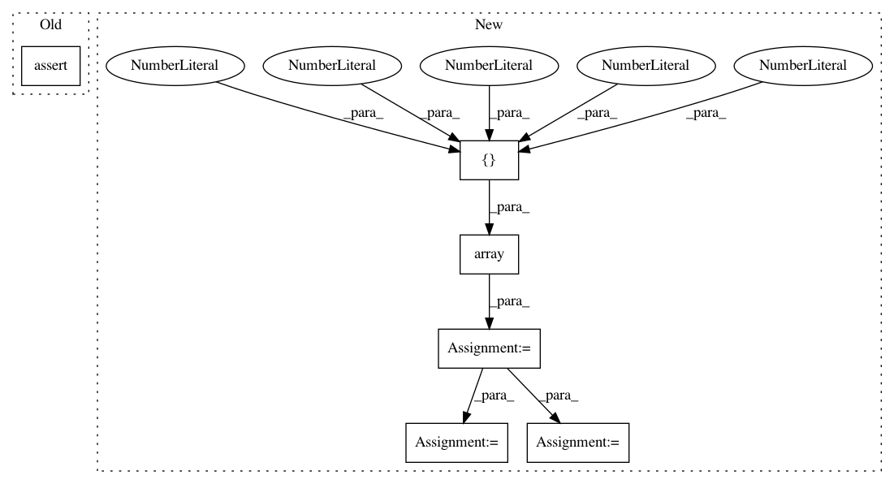

b197fb0946afe59b45a8c7a20a567ebfe253108f,neurodsp/tests/test_utils.py,,test_demean,#,11
Before Change
dat = demean(dat)
// TODO: Add isclose checking here
assert True
def test_normalize_variance():
dat = np.array([2, 2, 2])
After Change
def test_demean():
d1 = np.array([1, 2, 3])
d2 = np.array([0, 1, 2, 3, 0])
// Check default - demean to 0
out1 = demean(d1)
assert np.isclose(out1.mean(), 0.)
// Check demeaning and adding specific mean
out2 = demean(d1, mean=1.)
assert np.isclose(out2.mean(), 1.)
// Check dealing with zero entries
out3 = demean(d2)
assert np.isclose(out3[np.nonzero(out3)].mean(), 0)
// Check turning of non-zero selection
out3 = demean(d2, mean=1, select_nonzero = False)
assert np.isclose(out3.mean(), 1)
def test_normalize_variance():
In pattern: SUPERPATTERN
Frequency: 3
Non-data size: 6
Instances
Project Name: neurodsp-tools/neurodsp
Commit Name: b197fb0946afe59b45a8c7a20a567ebfe253108f
Time: 2019-04-08
Author: tdonoghue@ucsd.edu
File Name: neurodsp/tests/test_utils.py
Class Name:
Method Name: test_demean
Project Name: open-mmlab/mmdetection
Commit Name: 347618a5fbaa70fb9d2124d033275f44fdfcca2f
Time: 2020-05-19
Author: maxim@bonnaerens.be
File Name: tests/test_nms.py
Class Name:
Method Name: test_nms_device_and_dtypes_gpu
Project Name: open-mmlab/mmdetection
Commit Name: 347618a5fbaa70fb9d2124d033275f44fdfcca2f
Time: 2020-05-19
Author: maxim@bonnaerens.be
File Name: tests/test_nms.py
Class Name:
Method Name: test_nms_device_and_dtypes_cpu